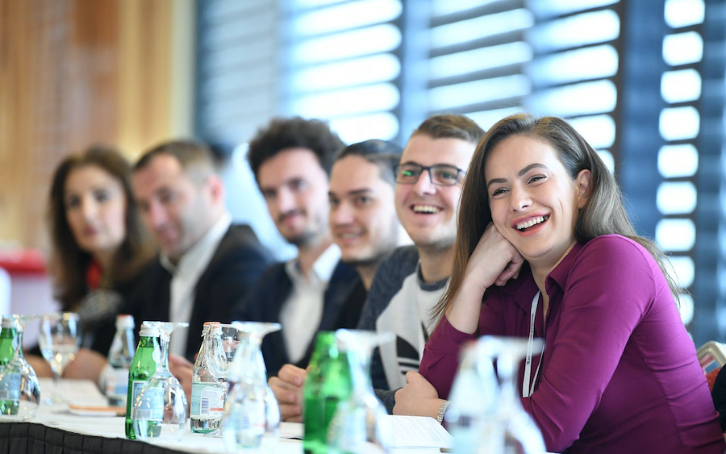

Designing a Youth Debate Program
Most youth debate programs have two core components, debate instruction and debate competitions. NDI’s YLD model also features policy dialogues, regional debates, and a national debate competition. These activities seek to bridge divides among participants in different parts of the country, address varying skill levels among the participants, and increase their access to political leaders. Each component of the program is designed with the needs and capacity of the participants at the center, gradually increasing young people’s skills and working within their environment to elevate their profile and help them establish their voice.
Phase 1: Outreach and Recruitment
Once the program begins, determine the regions and cities where the activities will take place and develop an outreach and recruitment strategy. The number of cities depends on the program budget and how many young people will participate in the program. The first three program activities (policy dialogues, debate camps, and debate tournaments) will take place in different regions, culminating in a final tournament with all participants in one location. The YLD model seeks to bridge gaps between young people in different regions of the country and promote increased collaboration among the program participants. This objective should be considered when determining the regions where the program will take place. Once each location has been selected, program staff should utilize existing partnerships to identify program participants. Prior to conducting outreach, program staff should determine the profile for choosing participants. A clear recruitment strategy and participant profile ensures a diverse participant pool and sustained engagement throughout the program. The criteria for choosing participants ideally includes politically active young people who have limited access to opportunities to build political knowledge and skills. The program should also aim to recruit a diverse, gender-balanced applicant pool. Depending on the overall goal of the program, this can include young people from civil society organizations, local youth councils, universities, professional networks, or political parties. Program staff should conduct an outreach and recruitment trip to each proposed location and provide regional CSO’s with an overview of the program and the activities. During this phase, it is also important to identify venues for the program events, which can be community centers, universities, conference centers, or other accessible locations.
Phase 2: Policy Dialogues
-

Features:
- 40-50 Young People
- A Panel of Technical Experts & Elected Officials
- Practical exercises featuring policy reform topics and problem analysis
- Roundtable Discussions
Policy Dialogues are the first activity and provide a space to introduce young people to the program and for young people to identify and think through complex issues affecting the country. Participants are able to engage with experts to learn more about political reform and gather research from credible sources. The policy dialogues are also an opportunity to gauge participant interest and skill level, as well as their familiarity with political reform. Engaging in a facilitated dialogue introduces participants to the skills they will further develop and apply through the debate program, such as civil discourse, active listening, and public speaking. Each policy dialogue includes an expert panel made up of topical experts, community leaders, or elected officials who can serve as a valuable resource for the participants, facilitate conversation on policy reform and demonstrate positive engagement between young people and adult decision-makers. The experts should be chosen based on the topics that are likely to arise during the dialogue. Finally, the topic(s) for the debate competition should result from the discussions during the policy dialogues and reflect a timely issue within the country.
Considerations
- When choosing speakers for the panel, consider the technical knowledge, political background, as well as gender balance and diversity.
- Prioritize inviting current or previous elected officials who are affiliated with the region where the event is taking place, particularly those who are demonstrated youth-allies and those who are willing to serve as contacts or resources for the participants beyond the life of the program.
- Consider dividing the event into two components:
- Part 1: Young people and the panel of experts have facilitated dialogue about specific issues impacting the region, the importance of policy reform, and the role of young people in reform efforts.
- Part 2: Young people take part in practical, small group exercises during which they discuss policy issues, conduct a problem analysis, and brainstorm solutions.
- Encourage each group to develop a list of policy reform issues in their local community and connect local issues to those of national importance.
Phase 3: Debate Instruction “BootCamps”
- 20-30 young people
- 1 main facilitator and a core group of 5 -7 youth facilitators
- Hands-on debate activities and team-building exercises
- Formation of debate teams
 Features:
Features:
The next phase of the program, debate instruction camps, prepare participants to compete in debate competitions. Young people who participated in the policy dialogues have the opportunity to apply for the debate bootcamp, which provides training on the fundamentals of debate. The pilot can be anywhere from three days to three weeks, depending on the availability of the participants and program budget. The curriculum is highly adaptable and can be formatted to take place over a longer period of time. A shorter training period allows for a significant amount of curriculum to be covered in a short period of time and significantly decreases the duration of the program.
-
Training Topics Include 10 Modules:
- MODULE 1: Getting Started
- MODULE 2: Public Speaking
- MODULE 3: Demonstration Debate
- MODULE 4: Cross-Examination
- MODULE 5: Affirmation, Reasoning & Evidence
- MODULE 6: Affirmative Case Preparation
- MODULE 7: Exploring the Topic
- MODULE 8: Impact Calculus
- MODULE 9: Negative Case Preparation
- MODULE 10: Practice Debate
The bootcamp should be facilitated by an experienced debate instructor and include additional support from experienced youth facilitators. There should be one youth facilitator for every five participants; this ensures that every debate team receives personalized instruction and support throughout the bootcamp. During the bootcamp, participants should also continue to connect their participation in the debate program to civic and political participation. This exchange of ideas and experiences, as well as the development of debate skills and soft skills, is key to developing and empowering young people as political actors. The YLD Instruction Manual, in the resources section, includes training materials for the debate instruction camp and includes a ten-part program curriculum with corresponding activities.
Following the camp, there is a brief period that allows debate teams to continue their preparation for the competition. During this period, debate teams should be paired with a youth facilitator from the camp who would provide ongoing coaching and mentorship throughout the preparation period.
Considerations
- Depending on the length of the program, the budget and the needs of the participants, the debate training can take place over a minimum of three consecutive days or over a period of a few weeks.
- Prioritize hiring a primary instructor and multiple youth facilitators who have demonstrated experience in both competitive debate and civic engagement.
- Ensure gender balance and diversity when recruiting for program participants, instructors and facilitators.
- Consider the diverse needs of the participants and whether they will need additional learning support. See the resources for a list of inclusion considerations. A ratio of 1:5 provides enough staff for individualized support.
Debate Competitions
Regional Competition
Regional debate competitions take place following the debate instructions camps. Allow for a short time period between events, one to two weeks, for participants to practice. In order to publicize the regional competition, participants should utilize their existing networks, including inviting local organizations and universities to attend the competition. Local elected officials, topical experts, and community leaders can also be invited to the regional debates and participate as judges, moderators, or audience members. Following the regional competition, all teams should be eligible to compete in the national competition.
National Competition
Following the regional debates, teams from each region are invited to compete in a national competition. Arrange time before the competition for participants to take part in facilitated activities and networking to encourage greater cross-regional collaboration.
National and local elected officials, youth organization representatives, topical experts, and other community leaders would be invited to attend the debates. To incentivize their participation and raise the profile of the debates, they will be offered the opportunity to serve as judges or moderators. Following the national competition, debate teams will discuss the use of debate as a political tool on local radio shows or television shows and discuss current policy issues and their ideas for policy reform.
Considerations
- Utilize social media to publicize and show the final debate match. The debate should also be recorded for widespread media dissemination following the competition such as radio broadcast and Youtube.
- The final debate match should also be recorded for widespread media dissemination following the competition such as radio broadcast and Youtube.
- Arrange for traditional media outlets to interview debaters ahead of the final competition.
- Invite journalists to cover the national competition and interview competing teams.